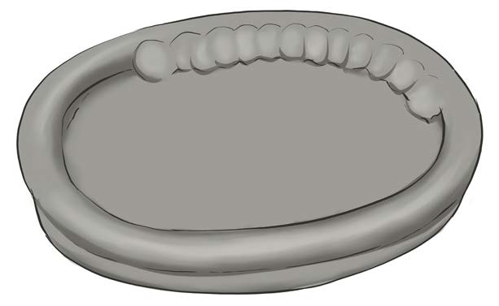
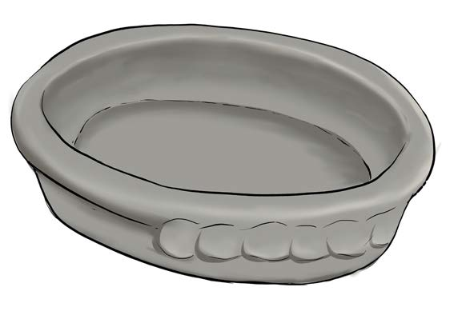

(g)
Zungusha mzunguko mwingine wa pindi juu ya mzunguko ulioambatana na kitako;
(h)
Tumia kidole gumba kuminya udongo kutoka pindi ya juu na kuunganisha katika pindi ya chini, kama inavyoonekana katika Kielelezo namba 10;

(i)
Pindi moja ikikamilika, unganisha na pindi nyingine. Endelea kutengeneza ukuta wa kifani mpaka upate urefu unaohitajika, kama inavyoonekana katika Kielelezo namba 11;